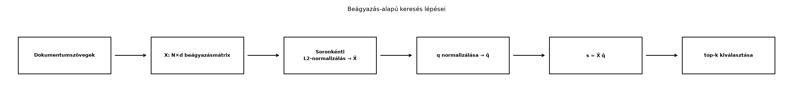

Amikor egy dokumentumgyűjteményben, adatbázisban vagy kódbázisban a felhasználó kérdéséhez leginkább hasonló szövegrészeket szeretnénk megtalálni, a modern gépi tanulási rendszerek szavakat, mondatokat vagy dokumentumokat először ugyanabba a -dimenziós vektortérbe képezik le. Ezek a beágyazások aztán összehasonlíthatók a Szög, merőlegesség és koszinusz-hasonlóság alfejezetben bemutatott koszinusz-hasonlósággal. A kérdés most az, hogyan találjuk meg gyorsan a legnagyobb hasonlóságú elemeket, ha nem néhány tucat, hanem mondjuk több millió beágyazásunk van.
Ez a beágyazás-alapú keresés és a vektor-adatbázisok alapfeladata. A lineáris algebrai megoldás gyönyörűen tömör: ha az adatbázis beágyazásait mátrixba rendezzük, akkor egyetlen mátrix–vektor szorzás az összes koszinusz-hasonlóságot egyszerre kiszámítja. Az alábbiakban ezt a mátrixos nézetet építjük fel, majd szó lesz a nagy méret miatt szükséges dimenziócsökkentésről és a gyakorlatban használt közelítő keresési elvekről is.
A keresés folyamata három tömör lépésre bontható.

Először a dokumentumokat egy beágyazó modell közös -dimenziós vektorokká alakítja. Ezután a vektorokat soronként egységnyi hosszúságúra normalizáljuk: így a skalárszorzatuk közvetlenül koszinusz-hasonlóság lesz. Végül a lekérdezés normalizált vektorát is kiszámítjuk, és egyetlen mátrixszorzással megkapjuk a hasonlósági pontszámokat. A legnagyobb pontszámú elemeket kiválasztva kapjuk a top- találatokat.
Legyen az adatbázis beágyazásmátrixa , amelynek -edik sora a -dimenziós vektor transzponáltja: . A soronkénti L2-normalizálás azt jelenti, hogy minden sort elosztunk a saját normájával:
A normalizált mátrix sorai így egységnyi hosszúak:
Definíció. Legyen az méretű, soronként normalizált beágyazásmátrix, és legyen a normalizált lekérdezésvektor. Ekkor a
hasonlósági vektor -edik eleme éppen a lekérdezés és az -edik adatbázisvektor koszinusz-hasonlósága:
A top- keresés azt a indexet adja vissza, amelyekhez a legnagyobb értékek tartoznak.
A definícióban
oszlopvektor, ezért az
szorzat értelmes:
és
dimenziójú mátrixok szorzata
vektort ad. NumPy-ban ez az X_norm @ q_norm alak.
Legyen , és az adatbázisban beágyazás:
A lekérdezés legyen .
Először kiszámítjuk a normákat:
A normalizált adatbázissorok:
A normalizált lekérdezés:
A hasonlósági vektort soronként számoljuk:
| 1 | 1 | |||
| 2 | 1 | |||
| 3 | 5 | |||
| 4 |
Például a harmadik sor hasonlósága:
A legnagyobb értékek a harmadik és a második sorhoz tartoznak, tehát a top-2 találat az és az dokumentum.
A definíció mögött a mátrix–vektor szorzás soronkénti jelentése áll. Az szorzat -edik eleme definíció szerint az mátrix -edik sorának és a oszlopnak a skalárszorzata:
Mivel és egységnyi hosszú vektorok, a skalárszorzat megegyezik a koszinusz-hasonlósággal:
Ezért a normalizálás kulcsfontosságú: a mátrixszorzás így nem a nyers skalárszorzatot, hanem kifejezetten a hosszfüggetlen, irányalapú hasonlóságot adja.
A pontos top- keresés első lépése a teljes vektor kiszámítása. A mátrix–vektor szorzás költsége szorzás-összeadás, a tárolási igény pedig szám. Ha például egy játékmodellben dokumentum és , akkor ez nagyságrendileg szorzás-összeadás, ami már indokolja az indexelést és az esetleges dimenziócsökkentést. A legnagyobb elem kiválasztása rendezéssel idejű; ha kicsi, kupaccal ez időre javítható, de a domináns lépés általában a hasonlóságok kiszámítása.
Az költség két irányból csökkenthető: vagy az elemszámot szűkítjük közelítő indexeléssel, vagy a dimenziót vetítjük le. A másodikra két elterjedt lineáris algebrai eszköz van.
Az egyik a Főkomponens-elemzés (PCA) SVD-vel alfejezetben megismert PCA. Ha a beágyazások varianciájának nagy részét irány is megőrzi, akkor egy vetítőmátrixszal az adatbázist alacsonyabb dimenziós térbe képezzük (a célméretet -vel jelöljük, hogy ne keveredjen a top- -jával). A lekérdezést is ugyanígy vetítjük, majd újra normalizálunk. A keresési költség ekkor szorzás-összeadás.
A másik a véletlen vetítés. Itt nem tanulunk a beágyazásokból, hanem egy rögzített véletlen mátrixot, -t használunk, például olyan elemekkel, amelyek egyenlő valószínűséggel értékűek. A Johnson–Lindenstrauss-lemma szerint, ha elegendően nagy, nagyságrendileg , akkor az euklideszi távolságok nagy valószínűséggel csak legfeljebb arányban torzulnak. Fontos azonban, hogy a koszinusz-hasonlóság sem marad pontosan változatlan, ezért a vetítés után újra normalizálni kell, és a torzulást az adott feladaton ellenőrizni érdemes.
A gyakorlatban a legnagyobb vektor-adatbázisok nem feltétlenül végzik el minden lekérdezésnél az összes vektor pontozását. Helyette közelítő legközelebbi szomszéd keresést használnak, angolul approximate nearest neighbour, röviden ANN. A közelítő jelleg kompromisszumot jelent: a keresés gyorsabb, de nem garantált, hogy minden esetben megtalálja a valódi legközelebbi vektort. A kompromisszumot általában a recall, vagyis a megtalált valódi találatok aránya és a sebesség között hangolják.
A klaszterezés alapú IVF a dokumentumbeágyazásokat először klaszterre osztja. Minden klaszterközéphez egy listát rendelünk a hozzá tartozó vektorokból. Kereséskor először a lekérdezéshez legközelebbi klaszterközéppontot választjuk ki, és csak az ezekben lévő vektorokat pontozzuk. A költség így a teljes helyett csak a kiválasztott klaszterek elemszámával arányos. A pontosságvesztés abból adódik, hogy a valódi legközelebbi szomszéd egy kihagyott klaszterben is lehet.
A gráfalapú HNSW ennél finomabb, többrétegű gráfot épít. A csúcsok a beágyazások, az élek a hasonló vektorokat kötik össze. A felső rétegekben hosszú élek nagy ugrásokat tesznek lehetővé, az alsó rétegekben sűrű, rövid élek finomítanak. A keresés a felső rétegből indul, és lefelé haladva mindig a lokálisan legígéretesebb csúcs felé lép. Az eljárás sok esetben gyorsan talál jó szomszédot anélkül, hogy az összes csúcsot bejárná, de globális optimumot nem garantál.
Az alábbi NumPy-kód a kidolgozott példát reprodukálja.
import numpy as np
X = np.array([[1., 0.],
[0., 1.],
[3., 4.],
[-1., 1.]])
q = np.array([1., 2.])
# Soronkénti L2-normalizálás; keepdims=True a helyes broadcasting-hoz.
X_norm = X / np.linalg.norm(X, axis=1, keepdims=True)
q_norm = q / np.linalg.norm(q)
# Az összes koszinusz-hasonlóság egyetlen mátrix-vektor szorzással.
sim = X_norm @ q_norm
# A két legnagyobb érték indexe; a valós top-k sorrendhez megfordítjuk.
top2 = np.argsort(sim)[-2:][::-1]
np.set_printoptions(precision=4, suppress=True)
print("normalizált X:\n", X_norm)
print("hasonlóság:", sim)
print("top-2 index (0-tól):", top2)Várt kimenet:
normalizált X:
[[ 1. 0. ]
[ 0. 1. ]
[ 0.6 0.8 ]
[-0.7071 0.7071]]
hasonlóság: [0.4472 0.8944 0.9839 0.3162]
top-2 index (0-tól): [2 1]A kódban a 0-tól induló indexelés miatt a harmadik dokumentum indexe 2, a másodiké 1.
A beágyazás-alapú keresés a RAG-rendszerek (retrieval-augmented generation) központi lineáris algebrai művelete. Egy ilyen rendszerben a felhasználó kérdését ugyanaz a modell ágyazza be, mint amellyel a dokumentumtárat feldolgoztuk. Legyen a kérdés beágyazása , a dokumentumtár normalizált beágyazásmátrixa pedig . A rendszer kiszámítja a
pontszámvektort, kiválasztja a legnagyobb pontszámú szövegrészt, majd ezeket a szövegeket a generáló nagy nyelvi modell promptjába illeszti. A lineáris algebra tehát itt a modell külső memóriájának pontos matematikai megvalósítása: a keresés mátrixszorzás, a generálás pedig az A transformer-blokk teljes számítása és költsége alfejezetben leírt műveleteken alapul.
Egy illusztratív játékmodellben lehet , ; a hasonlóság kiszámítása ekkor alakú -as mátrix és -dimenziós vektor szorzata, ami darab koszinusz-hasonlóságot ad. A konkrét beágyazómodellek dimenziója és a termékek teljesítménye gyorsan változó gyakorlati adat, ezért a valós értékeket mindig az adott modell kártyájából kell ellenőrizni.
A normalizálás elhagyása. Ha a tanuló a nyers szorzatot használja, akkor a hossz is beleszól a rangsorba, ezért nem koszinusz-hasonlóságot kap. A helyes eljárás először soronként normalizálni -et, és -t is normalizálni.
Helytelen broadcasting. Az
np.linalg.norm(X, axis=1) egy
alakú tömböt ad, amellyel az
mátrixot nem lehet soronként osztani: a broadcasting az utolsó
(
hosszú) tengelyhez igazítaná, ami
esetén hibaüzenetet,
esetén csendben rossz eredményt ad. A helyes alak
np.linalg.norm(X, axis=1, keepdims=True), hogy a normák
oszlopvektorként
méretűek legyenek.
A top-k visszafelé olvasása. A
np.argsort(sim)[-2:] a két legnagyobb érték indexét növekvő
sorrendben adja, ezért ha a felhasználó szerinti rangsor kell, meg kell
fordítani: [::-1]. A legnagyobb érték így az első helyre
kerül.
A közelítő keresés pontosságának túlbecslése. Az IVF és a HNSW nem garantálja a valódi legközelebbi szomszédot. Ha a feladat megköveteli a globális top- pontosságát, akkor pontos lineáris keresést vagy olyan indexelést kell használni, amelyet a recall szempontjából ellenőriztek.
Dimenziócsökkentés után a koszinusz automatikus megőrzésének feltételezése. A vetítés megváltoztathatja a vektorok hosszát és szögeit. A vetítés után újra normalizálni kell, és azt is tudni kell, hogy a rangsor akkor sem lesz feltétlenül azonos az eredeti térbeli rangsorral.
Fogalmi kérdés. Miért érdemes a beágyazásokat normalizálni a keresés előtt? Mit mér ekkor a mátrix–vektor szorzat?
Kézi számolás. Adott a következő három dokumentumvektor: , , , és a lekérdezés . Számítsa ki a normalizált vektorokat, a hasonlósági vektort, és adja meg a top-1 találatot.
NumPy-feladat. Hozzon létre 5 darab véletlen
3-dimenziós vektort rng = np.random.default_rng(0)
segítségével. Normalizálja őket soronként, számítsa ki a
hasonlósági mátrixot, és ellenőrizze, hogy a főátló minden eleme
1.
Gondolkodtató alkalmazás. Egy RAG-rendszerben a top- értékét -re választjuk. Milyen hibalehetőséggel jár ez, és miért nem feltétlenül jó az sem, ha nagyon nagy?
A normalizálás után a vektorok hossza egységnyi lesz, ezért a skalárszorzat éppen a koszinusz-hasonlóságot adja. A mátrix–vektor szorzat soronként kiszámítja a lekérdezés és az összes adatbázisvektor koszinuszát, így egyetlen művelettel megkapjuk a rangsorhoz szükséges pontszámokat.
A normák: , , , . A normalizált vektorok: , , , . A hasonlóságok: , , . A top-1 találat az első dokumentum.
A lehetséges kód:
import numpy as np
rng = np.random.default_rng(0)
X = rng.standard_normal((5, 3))
X_norm = X / np.linalg.norm(X, axis=1, keepdims=True)
S = X_norm @ X_norm.T
print(S.shape)
print(np.allclose(np.diag(S), 1.0))Várt kimenet:
(5, 5)
TrueA főátló minden eleme azért 1, mert minden normalizált vektor önmagával vett skalárszorzata .
Ha , akkor a legnagyobb hasonlóságú szövegrészt adjuk át a modellnek. Ez kockázatos, mert a visszakeresett dokumentum véletlen vagy modellhiba miatt nem feltétlenül tartalmazza a kérdéshez szükséges tényt, és a generálás így téves válaszhoz vezethet. Ha viszont nagyon nagy, a prompt hosszú lesz, a számítási költség nő, és zajos, irreleváns szövegek is bekerülhetnek, amelyek ronthatják a válasz minőségét. A top- értékét ezért a pontosság, a költség és a prompt mérete közötti kompromisszumként kell megválasztani.
A beágyazás-alapú keresés alapja, hogy a dokumentumok beágyazásait egy mátrixba rendezzük, majd a sorokat egységnyi hosszúságúra normalizáljuk. A normalizált lekérdezéssel képzett hasonlósági vektor soronként éppen a koszinusz-hasonlóságot adja. A pontos keresés költsége szorzás-összeadás, ami dimenziócsökkentéssel vagy közelítő indexeléssel csökkenthető. A gyakorlatban az IVF klaszterezést, a HNSW többrétegű gráfot használ, és mindkettő pontosság-sebesség kompromisszumot jelent.
A továbbiakban leggyakrabban használt képletek:
Ez az alfejezet klasszikus lineáris algebrai ismeretekre, valamint a korszerű beágyazás-alapú keresés elvi alapjaira épül. A koszinusz-hasonlóság és a mátrixszorzás tárgyalása Boyd–Vandenberghe Introduction to Applied Linear Algebra és Strang lineáris algebra kurzusa nyomán tanítható. A véletlen vetítés Johnson–Lindenstrauss-lemmája klasszikus, 1984-re visszanyúló eredmény. A HNSW elvét Malkov és Yashunin cikke, az IVF-ét a klaszterező indexelés irodalma tárgyalja (ellenőrzési igénnyel); a termékek és a konkrét beágyazómodellek paraméterei gyorsan változó gyakorlati adatok, ezért azokat ebben a fejezetben nem ellenőriztük. A bemutatott NumPy-kimenet a megadott kóddal, a kidolgozott számpéldából számolva jön létre.